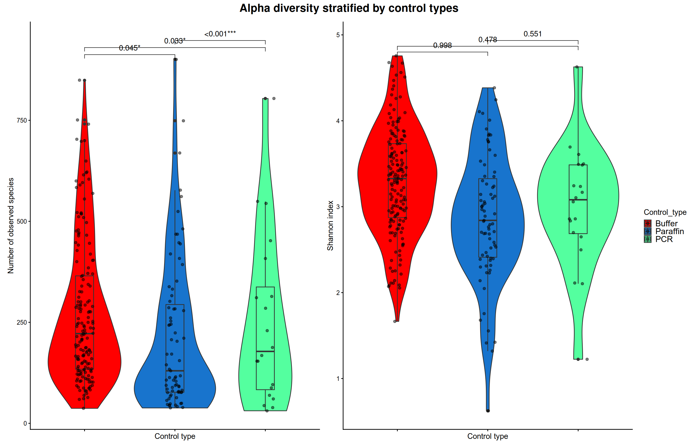

#plt <- lst$Observed + lst$Shannon + plot_layout(guides = "collect") +plt <- res1$plt + res2$plt +plot_layout(guides ="collect")+plot_annotation(title ="Alpha diversity stratified by control types") &theme(plot.title =element_text(size =16, face ="bold", hjust =0.5))## save plt to png#ggsave("./Figures_for_Manuscript_files/saved_png/1.B.svg", plt, width = 8, height = 6, dpi = 300, limitsize = F)plt

Figure 1B Alpha diversity of NCT samples by control type: observed species richness, Shannon index, and inverse Simpson index (left to right respectively). Statistically significant pairwise differences are indicated.
contrast estimate SE df lower.CL upper.CL t.ratio p.value
Buffer - Paraffin 0.00077 0.0124 239 -0.0284 0.0300 0.062 0.9979
Buffer - PCR -0.01751 0.0151 239 -0.0531 0.0181 -1.161 0.4779
Paraffin - PCR -0.01828 0.0175 239 -0.0596 0.0231 -1.043 0.5507
Results are averaged over the levels of: Person, Year, Quarter
Note: contrasts are still on the inverse scale. Consider using
regrid() if you want contrasts of back-transformed estimates.
Confidence level used: 0.95
Conf-level adjustment: tukey method for comparing a family of 3 estimates
P value adjustment: tukey method for comparing a family of 3 estimates
Figure 1C: Beta diversity ordination of NCT samples using Wrench and rarefaction as normalization (left to right). Group centroids and PERMANOVA p-values are shown.
Table for pairwise
Code
### adonis2() with formular#adonis2(formula = bray_dist ~ Person + Year + Quarter + Control_type, data = meta(pseq), permutations = 9999, by = "margin")meta <-meta(pseq)dist <- pseq %>%WrenchWrapper(grp ="Control_type") %>%#rarefy_even_depth() %>% phyloseq::distance(method ="bray")pairwise_levels <-combn(unique(meta$Control_type), 2, simplify =FALSE)results <-lapply(pairwise_levels, function(x) { idx <- meta$Control_type %in% x meta_sub <-droplevels(meta[idx, ]) dist_sub <-as.dist(as.matrix(dist)[idx, idx]) fit <-adonis2(dist_sub ~ Person + Year + Quarter + Control_type,data = meta_sub,#method = "bray",permutations =999,by ="margin")data.frame(group1 = x[1],group2 = x[2],p_value = fit["Control_type", "Pr(>F)"],F_model = fit["Control_type", "F"],R2 = fit["Control_type", "R2"] )})print(results)